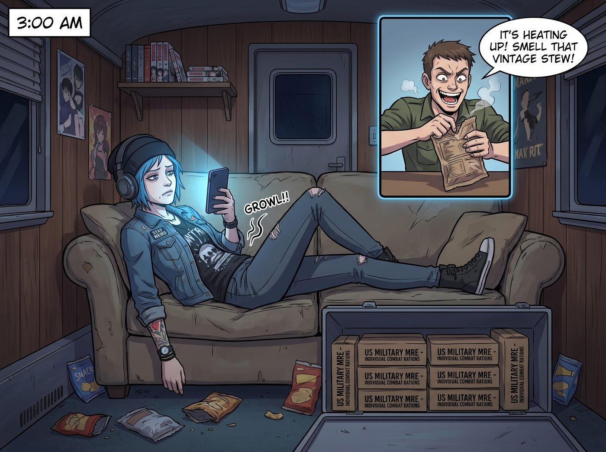
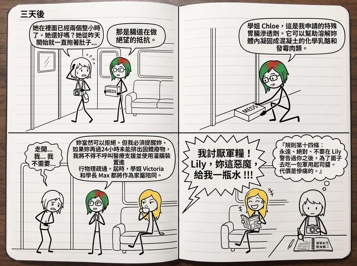

戰術便秘


凌晨三點，二號車廂裡只剩下螢幕的微光。
Chloe 戴著耳機，正以一種極度扭曲的姿勢癱在沙發上刷影片。螢幕裡，一個知名的軍糧開箱評測主正在撕開一包老式軍用口糧，並用極度享受的語氣進行著實況解說。
看著影片裡那個在化學加熱袋裡冒著熱氣的錫箔包，Chloe 的肚子發出了一聲不爭氣的悲鳴。
她突然想起，就在她們腳下的儲物艙裡，堆著整整十箱 Lily 調撥來的、貨真價實的美軍現役單兵口糧。
一、抽樣質檢
「反正是花聯邦政府的錢，不吃白不吃。」Chloe 骨子裡的作死精神和街頭的好奇心被徹底點燃了。她躡手躡腳地爬起來，打開了貼著一級戰略熱量儲備標籤的金屬箱，在一堆褐色的塑膠袋裡翻找了一下，抽出了一包印著粗體黑字的：「第十六號餐：BBQ風味塑形豬肋排」。
「聽起來就像是速食連鎖店肋排的硬漢版嘛。」Chloe 滿意地舔了舔嘴唇，帶著戰利品回到了餐桌前。
「Chloe 學姐，我強烈建議您放下那個袋子。」
幽靈般的聲音在背後響起。Lily 穿著毛茸茸的睡衣，手裡端著一杯溫水，不知什麼時候已經站在了廚房的陰影裡。
「幹嘛？實習生，捨不得妳的聯邦資產了？」Chloe 挑釁地晃了晃手裡的口糧包，「我這叫抽樣質檢，萬一過期了怎麼辦？」
Lily 走上前，看了一眼袋子上的編號，推了推圓框眼鏡，眼神中透著一絲悲憫：「學姐，這不是一般的食物。這是為了讓一個背著八十磅裝備、急行軍一整天的士兵維持生命體徵而設計的高密度能量塊。這一小袋裡包含了一千兩百大卡的熱量，以及超過您日常攝取量三倍的鈉。」
Lily 豎起一根蒼白的手指，語氣嚴肅得像是在宣讀醫療免責聲明：「更重要的是，為了防止士兵在戰鬥中頻繁如廁，這類口糧的配方中刻意去除了絕大部分的膳食纖維。如果您在沒有進行高強度物理消耗的情況下食用它，您的消化系統將會面臨一場災難性的行政停擺。」
「去妳的戰術便秘。」Chloe 嗤笑了一聲，叛逆基因徹底爆發，「老娘吃過過期的墨西哥捲餅都沒事，這豬排還能要了我的命？」
說完，她粗暴地撕開了包裝。
二、尊嚴之戰
五分鐘後。無焰加熱袋發出刺耳的嘶嘶聲，冒出帶著化學藥水味的白煙。Chloe 按照影片裡的教學，把那塊加熱好的BBQ塑形豬肋排倒在了潔白的陶瓷盤子上。
就在這時，被嘶嘶聲吵醒的 Victoria 穿著真絲睡袍，打著哈欠走出了房間，想倒杯氣泡水。
「我的天哪……」Victoria 看到盤子裡的那坨東西，發出了一聲嫌惡的驚呼，「Chloe，妳是從車底刮了一塊沾著泥巴的剎車皮放在盤子裡嗎？這聞起來像泡在福馬林裡的狗糧！」
聽到這句話，Chloe 的自尊心瞬間像刺蝟一樣豎了起來。
本來，在看到那塊呈現出詭異灰褐色、表面甚至還帶著化學凝膠反光的肉塊時，Chloe 已經有點後悔了。但現在 Victoria 在場，Lily 也在看著，這已經不是一頓宵夜的問題了，這是尊嚴之戰。
「這叫軍事級的高效蛋白質，嬌生慣養的大小姐。」Chloe 冷笑著，拿起叉子，毫不猶豫地切下了一大塊，甚至還在旁邊那包被擠出來的、黃得發光的墨西哥辣椒起司醬裡用力沾了沾。
「看好了。」Chloe 盯著 Victoria，以一種視死如歸的氣勢，將那塊肉塞進了嘴裡。
咀嚼的第一秒。Chloe 的大腦一片空白。這根本不是肉。這是一塊用鹽巴、防腐劑、人工香精和某種無法名狀的工業纖維強行壓製而成的海綿。它在嘴裡沒有肉的彈性，只有一種令人作嘔的粉狀泥濘感；而那個黃色的起司醬，吃起來就像是融化了的塑膠輪胎，帶著一股詭異的化學辣味。
「喀嚓。」Max 不知什麼時候也醒了，舉著相機，精準地捕捉到了 Chloe 此刻眼角因為生理性反胃而飆出的一滴眼淚。
「怎麼樣？」Victoria 抱著手臂，冷冷地看著她，「是不是好吃到想哭？」
Chloe 的臉已經憋成了醬紫色。她握著叉子的手在微微發抖，喉結艱難地上下滑動了幾次。
咕咚。她硬生生地，把那塊戰術豬肋排嚥了下去。
「好吃。」Chloe 轉過頭，擠出一個比哭還難看的狂野笑容，眼眶通紅，「好吃得要命。充滿了……充滿了自由的氣息。妳們這種只配吃松露的凡人是不會懂的。」
為了證明自己沒有撒謊，在 Victoria 震驚和 Max 敬佩的目光中，Chloe 咬著牙，像一台沒有感情的碎紙機，將盤子裡剩下的豬肋排、起司醬，甚至連那塊硬得像磚頭一樣的梳打餅乾，全部塞進了嘴裡，囫圇吞下。
吃完後，她猛地站起身，擦了擦嘴：「爽。我現在感覺自己能徒手撕裂一輛坦克。我回去睡覺了。」然後，她邁著極其僵硬的、彷彿腹部已經結塊的步伐，走回了自己的房間。
三、絕望的抵抗
三天後。
二號車廂裡的氣氛有些凝重。
Chloe 已經在洗手間裡待了整整兩個小時了。裡面不時傳來幾聲壓抑的痛苦呻吟，以及瘋狂沖水的聲音。
Max 擔憂地在門外走來走去：「她還好嗎？她從昨天開始就一直捂著肚子……」
「那是腸道在進行絕望的抵抗。」Lily 穿著整潔的襯衫，走到洗手間門口。她手裡拿著一盒從急救箱裡拿出來的強效藥物。
Lily 彎下腰，將那盒藥物順著門縫推了進去。
「Chloe 學姐，」Lily 的聲音依然軟糯、平靜，且充滿了行政工程的冰冷慈悲，「這是我以特殊補給名義申請的腸胃滲透劑。它能幫您溶解那些已經在您體內固化成混凝土的化學起司和塑形肉類。」
門裡傳來 Chloe 虛弱而沙啞的聲音：「滾……老娘……老娘不需要……」
「當然，您可以拒絕。」Lily 乖巧地站在門外，「但我必須提醒您，如果您再堅持二十四小時無法完成固體廢棄物排放，我就必須考慮呼叫醫療支援，用灌腸設備對您進行物理清淤。屆時，Victoria 學姐和 Max 學姐都會在旁邊作為家屬陪同。」
門裡安靜了三秒鐘。
接著，一陣塑料包裝被瘋狂撕開的聲音傳了出來，伴隨著 Chloe 絕望的破音怒吼：「我恨軍糧！Lily 妳這個魔鬼，給我一瓶水！！！」
坐在沙發上的 Victoria 悠閒地翻著時尚雜誌，端起咖啡喝了一口，冷笑道：「街頭智慧，在軍事級的便秘面前，似乎不堪一擊呢。」
而 Max 則默默地拿起相機，雖然沒有拍照，但在她的《二號車廂生存指南》筆記本上，鄭重地寫下了一條新的規則：
『規則第十四條：永遠、絕對、不要在 Lily 警告過你之後，為了面子去吃一包軍用起司醬。代價是慘痛的。』